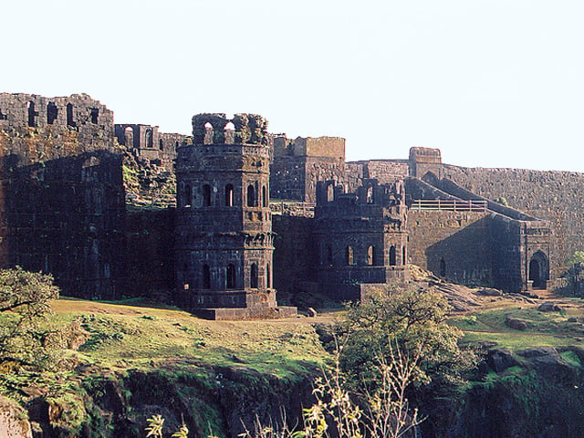

Raigad, seen in the Raigad district of Maharashtra, India, is a hill fort located in the city of Mahad. It is one of the strongest fortress on the Deccan Plateau and was historically referred to as Rairee or Rairy fort.
Chhatrapati Shivaji Maharaj, the Maratha ruler, along with his chief engineer Hiroji Indulkar, did the construction and development of various buildings and structures, including Raigad. In 1674, after being crowned the king of the Maratha kingdom of the Konkan, Shivaji Maharaj chose Raigad as the capital of his Hindavi Swaraj.
Historical Significance
Raigad Fort holds immense historical significance as it served as the capital of the Maratha Empire under the legendary Chhatrapati Shivaji Maharaj. In 1674, Shivaji was crowned the king of the Maratha kingdom, and Raigad Fort became the center of his administrative and military operations. During his reign, the Maratha Empire flourished and expanded considerably, reaching a significant portion of western and central India.
Architectural Features
Located at an elevation of 820 metres (2,700 ft) above its base and 1,356 m (4,449 ft) above sea level
within the Sahyadri mountain range, the fort offers views of the surrounding area. Accessing the fort requires
ascending approximately 1,737 steps. Alternatively, visitors can opt for the Raigad Ropeway, an aerial tramway spanning 750 m
(2,460 ft) in length and reaching a height of 400 m (1,300 ft), which conveniently transports them from the ground to the fort in just
four minutes.
The main palace was constructed using wood, of which only the base pillars remain. The main fort ruins consist of the queen's quarters, and six chambers, with each chamber having its private restroom. The chambers do not have any windows. In addition, ruins of three watch towers can be seen directly in front of the palace grounds out of which only two remain as the third one was destroyed during a bombardment. The fort also overlooks an artificial lake known as the Ganga Sagar Lake.
The only main pathway to the fort passes through the "Maha Darwaja" (Huge Door) which was previously closed at sunset. The Maha Darwaja has two huge bastions on both sides of the door which are approximately 20–21 m (65–70 ft) in height. The top of the fort is 180 m (600 ft) above this door.
Best Time to Visit
The best time to visit Raigad Fort is during the winter months (October to March), when the weather is cool and comfortable, making it ideal for exploring and trekking. The skies are clear, offering stunning views of the Sahyadri range.
The monsoon season (June to September) is perfect for nature lovers, as the fort is surrounded by lush greenery and misty hills, though the trek can be slippery due to rain.
Avoid the summer months (April to June), as the heat can make the ascent challenging. For the best experience, plan a winter visit for pleasant weather and ease of exploration.
Location
Raigad, seen in the Raigad district of Maharashtra, India, is a hill fort located in the city of Mahad.
Raigad, Maharashtra 402305.